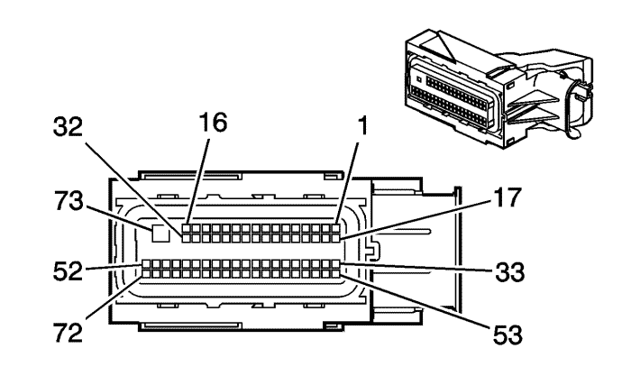

Captiva |
||||||||
|
|
|
|||||||
|
 |
Información de parte de conector
| Información de parte de terminal
|
Bulón | Tamaño | Color | Circuito | Función | Opción |
|---|---|---|---|---|---|
1-3 | -- | -- | -- | No disponible | -- |
4 | 0,5 | YE/WH | 3200 | Señal del sensor de presión barométrica | -- |
5 | 0,5 | WH/RD | 3201 | Referencia 1 de 5V | -- |
6 | 0,5 | D-GN | 380 | Señal del sensor de presión del refrigerante del A/C | -- |
7-8 | -- | -- | -- | No disponible | -- |
9 | 0,5 | D-BU/WH | 890 | Señal de sensor de presión de depósito de combustible | -- |
10 | 0,5 | YE/RD | 2709 | Referencia de 5 voltios del sensor de presión del depósito de combustible 1 | -- |
11-13 | -- | -- | -- | No disponible | -- |
14 | 0,5 | WH/RD | 1164 | Referencia de 5 voltios de posición del pedal del acelerador 4 (1) | -- |
15 | 0,5 | YE/WH | 1161 | Señal de posición del pedal del acelerador (1) | -- |
16-19 | -- | -- | -- | No disponible | -- |
20 | 0,5 | WH/YE | 3202 | Referencia baja | -- |
21 | 0,5 | BN/RD | 2700 | Referencia 1 de 5 voltios | -- |
22 | 0,5 | BK/BN | 5514 | Referencia baja del sensor de presión del refrigerante del A/C | -- |
23-24 | -- | -- | -- | No disponible | -- |
25 | 0,5 | D-BU/D-GN | 1936 | Señal primaria del sensor del nivel de combustible | -- |
26 | 0,5 | BK/D-GN | 6281 | Referencia baja del sensor de nivel de combustible | -- |
27 | 0,5 | D-BU/WH | 1937 | Señal secundaria del sensor del nivel de combustible | -- |
28-29 | -- | -- | -- | No disponible | -- |
30 | 0,5 | BK/D-BU | 1271 | Referencia baja de posición del pedal del acelerador (1) | -- |
31-32 | -- | -- | -- | No disponible | -- |
33 | 0,5 | BN/RD | 1274 | Referencia de 5 voltios de posición del pedal del acelerador 3 (2) | -- |
34 | 0,5 | D-GN/WH | 1162 | Señal de posición del pedal del acelerador (2) | -- |
35-38 | -- | -- | -- | No disponible | -- |
39 | 0,5 | D-BU | 2500 | Datos de serie GMLAN de alta velocidad (+) (1) | -- |
40 | 0,5 | WH | 2501 | Datos de serie GMLAN de alta velocidad (-) (1) | -- |
41 | -- | -- | -- | No disponible | -- |
42 | 0,5 | BN/YE | 473 | Control del relé del ventilador de refrigeración de alta velocidad | -- |
43 | -- | -- | -- | No disponible | -- |
44 | 0,5 | D-GN/GY | 465 | Control del relé principal de la bomba de combustible | -- |
45 | -- | -- | -- | No disponible | -- |
46 | 0,5 | BN/WH | 419 | Control del indicador Comprobar Motor | -- |
47-50 | -- | -- | -- | No disponible | -- |
51 | 0,5 | VT/D-GN | 439 | Tensión 1 de encendido, marcha/arranque | -- |
52 | 0,5 | RD/BN | 440 | Voltaje positivo de batería | -- |
53 | 0,5 | BK/VT | 1272 | Referencia baja de posición del pedal del acelerador (2) | -- |
54-56 | -- | -- | -- | No disponible | -- |
57 | 0,5 | WH/D-BU | 6311 | Señal del freno TCC/ETC/control de velocidad | -- |
58 | -- | -- | -- | No disponible | -- |
59 | 0,5 | D-GN/VT | 335 | Control del relé del ventilador de refrigeración de baja velocidad | -- |
60-61 | -- | -- | -- | No disponible | -- |
62 | 0,5 | VT/D-BU | 5291 | Alimentación con fusible del relé principal del tren motor (2) | -- |
63 | 0,5 | VT/GY | 6386 | Control del relé de activación del motor de arranque (PPEI 3) | -- |
64-65 | -- | -- | -- | No disponible | -- |
66 | 0,5 | WH | 1310 | Control del solenoide de ventilación del depósito EVAP | -- |
67 | 0,5 | VT/D-BU | 5292 | Alimentación con fusible del relé principal del tren motor (3) | -- |
68-69 | -- | -- | -- | No disponible | -- |
70 | 0,5 | VT/YE | 5985 | Daros de serie de activación de accesorios | -- |
71 | -- | -- | -- | No disponible | -- |
72 | 0,5 | YE | 5991 | Control de la bobina del relé del tren motor | -- |
73 | 1,0 | VT/D-BU | 5290 | Tensión de encendido 1 | -- |
| © Copyright Chevrolet Europe. All rights reserved |